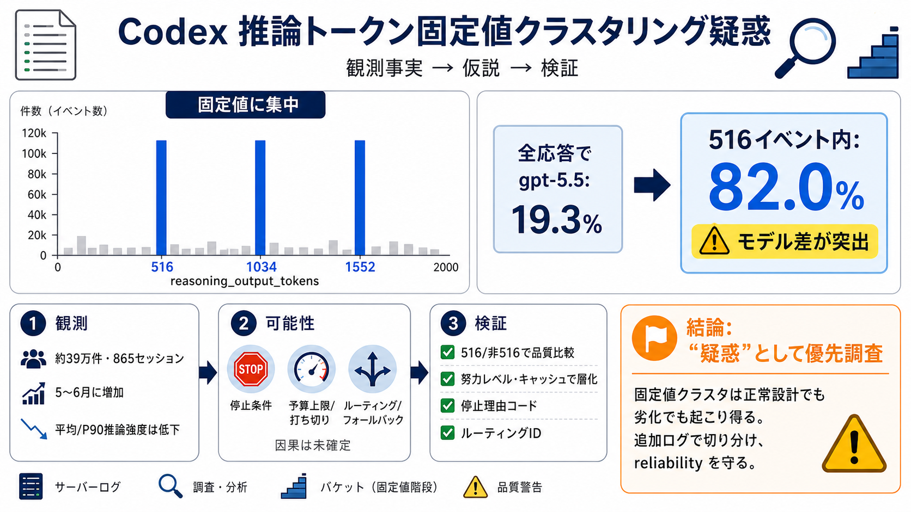

The GPT-5.5 “516 reasoning tokens” issue is not isolated (on xhigh ...
A few days ago, people here noticed that some Codex GPT-5.5 responses seem to stop at exactly reasoning_output_tokens = …

Codex のログにある reasoning_output_tokens が、516/1034/1552 のような固定値に偏るという報告と、複雑タスクの品質低下の関連可能性を整理します。
reasoning_output_tokens が自然な連続値としてばらつかず、固定値付近に“櫛（コーム）状”に集中している、という指摘です。
全体では gpt-5.5 比率が19.3%でも、reasoning_output_tokens=516 に限ると82.0%を占めると報告されています。
5月〜6月で固定値クラスタリングが増えた一方、平均の推論強度（推論トークン強度）は2〜4月より低下しているとされます。
解析期間と件数が示され、少数サンプルの偶然よりは“再現性”に寄っている、という主張です。
固定値への集中は、推論予算（reasoning budget）や停止条件が“量子化（バケット）”され、ある境界で止まっている可能性を連想させます。
reasoning_output_tokens の固定値集中は“原因候補”ですが、なぜその値で終了したか（停止理由）を直接示しません。
関連Issueやコメントとして、reasoning_output_tokens=516 のときに最終回答が誤るケース、または他モデル（例：gpt-5.4）で起きにくい可能性が報告されています。
停止理由・ルーティング・努力レベル・キャッシュ等を揃えて、516群とそれ以外の群で品質を比較し、同一タスクを対照実行するのが現実的です。
大規模集計で再現しやすい「数値の偏り」があり、さらに誤答報告も絡むため、内部の予算・停止設計に関する優先調査が妥当です。
A few days ago, people here noticed that some Codex GPT-5.5 responses seem to stop at exactly reasoning_output_tokens = …
* GPT-5.5 Costs: 9 Critical Reasons Fewer Tokens Can Burn More Cash. GPT-5.5 Costs shown by a financial calculator used …
I Tested GPT-5.5 Medium/High/xHigh Reasoning Levels: CLEAR Difference AI Coding Daily 11900 subscribers 311 likes 8004 v…
## Post. GPT-5.5 is a new class of intelligence. This intelligence makes it intuitive to use; it completes challenging t…
# GPT-5.5 Review: What It Actually Does Well (And What It Doesn't). GPT-5.5 is built for agentic tasks, not chat. Here's…